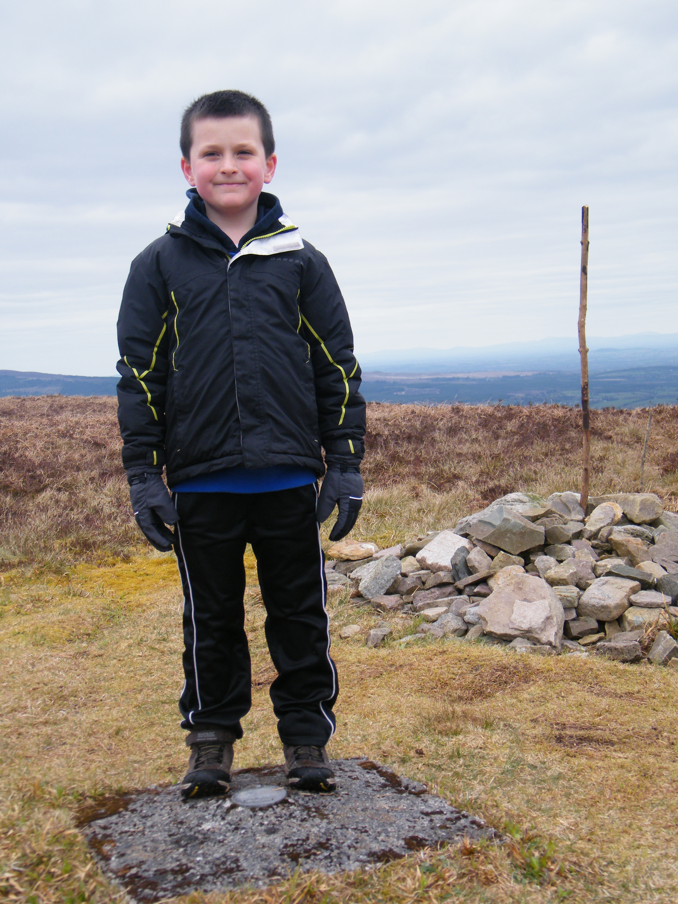
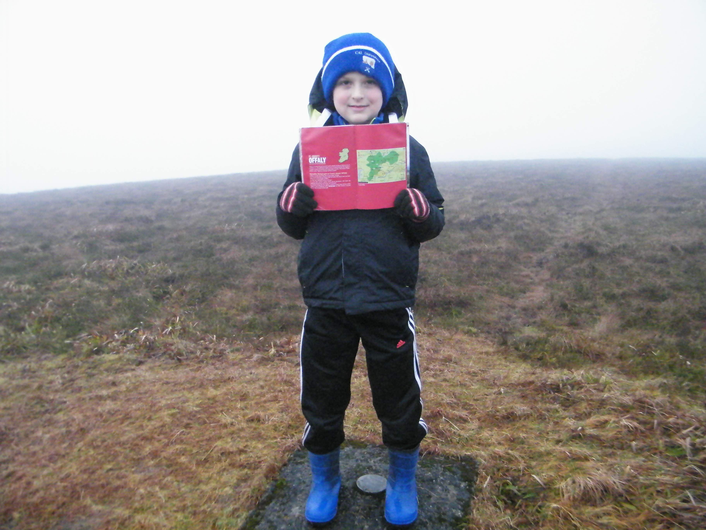

The following was written by Dad and is also published as blog on Kieron Gribbon's High Point Ireland Website.
When people heard about Dillon's achievements, many of them asked, "What's your next challenge?", Dillon's reply was "Oh, just take it easy for a while".
However, we had never expected High Point Ireland to present that next challenge to us so soon. Not only that, it had a deadline of 31st December 2016. The goal of the challenge was the Gribboneer of the Year 2016 Gold Award
High Point Ireland's Gribboneer of the Year award category is based on a calendar year, so we could not score any points for the 8 County Gribbons we had visited in 2015. We suspected that Dillon was probably down on points compared to others who had visited all the County Gribbons during 2016.
The rules for Gribboneer of the Year allows participants to earn points for up to 4 visits to each of the 186 Gribbon locations during the same calendar year (provided there are at least 5 whole days between the repeat visits). We identified the nearest Gribbon locations and set out a plan to fit in as many visits as possible before the end of December.
We started on the evening of 9th December 2016 by climbing Knocknaskagh the highest point in the Nagles Mountains (#Knocknaskagh427m). Over the following 22 days up to and including 31st December we had walks on 11 days covering approx 83km, making 15 visits to 7 different Gribbon locations, mostly starting early in the morning while trying to fit in School, Karate, Coder Dojo and Christmas preparations. A measure of the commitment by Dillon here is the fact that he was on the summit of Galtymore Mountain 3 times in December, all before 9am (on one of those days he also climbed to the summit of Knockmealdown).
The additional walks he completed during December 2016 were:- 09 Dec 2016 Knocknaskagh (#Knocknaskagh427m) [5 Points]
- 10 Dec 2016 Galtymore Mountain (#GaltymoreMountain918m) [19 Points]
- 16 Dec 2016 Knocknaskagh (#Knocknaskagh427m) [5 Points]
- 17 Dec 2016 Galtymore Mountain (#GaltymoreMountain918m) [19 Points]
- 17 Dec 2016 Knockmealdown (#Knockmealdown793m) [12 Points]
- 18 Dec 2016 Slievereagh (#Slievereagh465m) [3 Points]
- 24 Dec 2016 Knocknaskagh (#Knocknaskagh427m) [5 Points]
- 24 Dec 2016 Seefin (#SeefinMountain528m) [3 Points]
- 27 Dec 2016 Mount Leinster (#MountLeinster794m) [17 Points]
- 28 Dec 2016 Knockmealdown (#Knockmealdown793m) [12 Points]
- 29 Dec 2016 Galtymore Mountain (#GaltymoreMountain918m) [19 Points]
- 30 Dec 2016 Knocknaskagh (#Knocknaskagh427m) [5 Points]
- 30 Dec 2016 Seefin Mountain (#SeefinMountain528m) [3 Points]
- 30 Dec 2016 Slievereagh (#Slievereagh465m) [3 Points]
- 31 Dec 2016 Arderin (#Arderin527m) [15 Points]
Arderin was where we resumed our CHP challenge in April of 2016 after the winter break so it was very fitting to finish the year there too. Looking ahead to the rest of 2017, I am sure we will have many more adventures on the hills and mountains of Ireland. Even though they are not too far from us, we have never been to the Comeragh Mountains. They are definitely on our visit list. We must climb Fauscoum while we are there. Further afield, who knows what other parts of Ireland we will visit for weekends away and Summer holidays. Wherever we decide to go, one thing is certain: the Gribbon list will be consulted.
